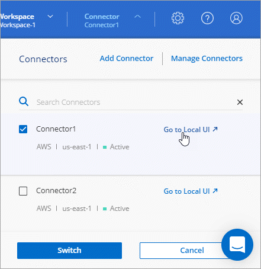

문서 변경 요청
문서 변경 요청 이 페이지 편집
이 페이지 편집 기여하는 방법 자세히 알아보기
기여하는 방법 자세히 알아보기기존 커넥터 관리
하나 이상의 커넥터를 만든 후에는 커넥터 간 전환, 커넥터에서 실행되는 로컬 사용자 인터페이스에 연결 등을 통해 커넥터를 관리할 수 있습니다.
커넥터 사이를 전환합니다
커넥터가 여러 개 있는 경우 커넥터 사이를 전환하여 특정 커넥터와 연결된 작업 환경을 볼 수 있습니다.
예를 들어, 멀티클라우드 환경에서 일하고 있다고 가정해 보겠습니다. AWS에 Connector가 있고 Google Cloud에 Connector가 있을 수 있습니다. 이러한 클라우드에서 실행되는 Cloud Volumes ONTAP 시스템을 관리하려면 이러한 커넥터 사이를 전환해야 합니다.
-
커넥터 * 드롭다운을 클릭하고 다른 커넥터를 선택한 다음 * 스위치 * 를 클릭합니다.

Cloud Manager는 선택한 커넥터와 연결된 작업 환경을 새로 고치고 표시합니다.
로컬 UI에 액세스합니다
SaaS 사용자 인터페이스에서 거의 모든 작업을 수행해야 하지만 로컬 사용자 인터페이스는 Connector에서 계속 사용할 수 있습니다. 이 인터페이스는 커넥터 자체에서 수행해야 하는 몇 가지 작업에 필요합니다.
-
패치 설치(일반적으로 NetApp 직원과 협력하여 패치 설치)
-
AutoSupport 메시지 다운로드(일반적으로 문제가 있을 때 NetApp 담당자가 지시)
-
"Cloud Manager SaaS 인터페이스에 로그인합니다" Connector 인스턴스에 대한 네트워크 연결이 있는 컴퓨터에서
커넥터에 공용 IP 주소가 없는 경우 VPN 연결이 필요하거나 Connector와 동일한 네트워크에 있는 점프 호스트에서 연결해야 합니다.
-
Connector * 드롭다운을 클릭한 다음 * Go to Local UI * 를 클릭합니다.

Connector에서 실행되는 Cloud Manager 인터페이스는 새 브라우저 탭에 로드됩니다.
AutoSupport 메시지를 다운로드하거나 보냅니다
문제가 있는 경우 NetApp 직원이 문제 해결을 위해 NetApp 지원에 AutoSupport 메시지를 보내도록 요청할 수 있습니다.
-
위의 섹션에 설명된 대로 Connector 로컬 UI에 연결합니다.
-
Cloud Manager 콘솔의 오른쪽 상단에서 도움말 아이콘을 클릭하고 * 지원 * 을 선택합니다.

-
커넥터 * 를 클릭합니다.
-
NetApp 지원에 정보를 보내는 방법에 따라 다음 옵션 중 하나를 선택합니다.
-
로컬 컴퓨터에 AutoSupport 메시지를 다운로드하는 옵션을 선택합니다. 그런 다음 원하는 방법을 사용하여 NetApp Support로 보낼 수 있습니다.
-
AutoSupport* 전송을 클릭하여 메시지를 NetApp 지원팀에 직접 전송하십시오.

-
Linux VM에 연결합니다
Connector가 실행되는 Linux VM에 연결해야 하는 경우 클라우드 공급자에서 제공하는 연결 옵션을 사용하여 연결할 수 있습니다.
설치하고
AWS에서 Connector 인스턴스를 생성한 경우 AWS 액세스 키와 암호 키를 제공했습니다. 이 키 쌍을 사용하여 인스턴스에 SSH를 사용할 수 있습니다.
Azure를 지원합니다
Azure에서 Connector VM을 생성한 경우 암호 또는 SSH 공개 키로 인증하도록 선택했습니다. VM에 연결하도록 선택한 인증 방법을 사용합니다.
Google 클라우드
Google Cloud에서 Connector를 만들 때는 인증 방법을 지정할 수 없습니다. 그러나 Google Cloud Console 또는 Google Cloud CLI(gcloud)를 사용하여 Linux VM 인스턴스에 연결할 수 있습니다.
보안 업데이트를 적용합니다
Connector의 운영 체제를 업데이트하여 최신 보안 업데이트로 패치되었는지 확인합니다.
-
커넥터 호스트에서 CLI 셸에 액세스합니다.
-
상승된 권한으로 다음 명령을 실행합니다.
sudo -s service service-manager stop yum -y update –-security service service-manager start
Connector의 URI를 편집합니다
Connector에 대한 URI를 추가하고 제거합니다.
-
Cloud Manager 헤더에서 * Connector * 드롭다운을 클릭합니다.
-
커넥터 관리 * 를 클릭합니다.
-
Connector에 대한 작업 메뉴를 클릭하고 * URI 편집 * 을 클릭합니다.
-
URI를 추가 및 제거한 다음 * 적용 * 을 클릭합니다.
Google Cloud NAT 게이트웨이를 사용할 때 다운로드 오류를 수정합니다
커넥터는 Cloud Volumes ONTAP용 소프트웨어 업데이트를 자동으로 다운로드합니다. 구성에서 Google Cloud NAT 게이트웨이를 사용하는 경우 다운로드가 실패할 수 있습니다. 소프트웨어 이미지를 분할하는 부품 수를 제한하여 이 문제를 해결할 수 있습니다. 이 단계는 Cloud Manager API를 사용하여 완료해야 합니다.
-
다음과 같은 JSON을 본문으로 /occm/config에 PUT 요청을 제출합니다.
{
"maxDownloadSessions": 32
}maxDownloadSessions_ 값은 1이거나 1보다 큰 정수일 수 있습니다. 값이 1이면 다운로드한 이미지는 분할되지 않습니다.
32는 예제 값입니다. 사용할 값은 NAT 구성과 동시에 사용할 수 있는 세션 수에 따라 다릅니다.
인터넷에 접속하지 않고 Connector를 사내에서 업그레이드합니다
있다면 "인터넷에 액세스할 수 없는 온프레미스 호스트에 커넥터를 설치했습니다", 최신 버전이 NetApp Support 사이트에서 제공되는 경우 Connector를 업그레이드할 수 있습니다.
업그레이드 프로세스 중에 커넥터를 다시 시작해야 업그레이드 중에 사용자 인터페이스를 사용할 수 있습니다.
-
에서 Cloud Manager 소프트웨어를 다운로드합니다 "NetApp Support 사이트".
-
Linux 호스트에 설치 프로그램을 복사합니다.
-
스크립트를 실행할 권한을 할당합니다.
chmod +x /path/cloud-manager-connector-offline-v3.9.14 -
설치 스크립트를 실행합니다.
sudo /path/cloud-manager-connector-offline-v3.9.14 -
업그레이드가 완료되면 * 도움말 > 지원 > 커넥터 * 로 이동하여 커넥터 버전을 확인할 수 있습니다.
Cloud Manager에서 커넥터를 제거합니다
커넥터가 비활성 상태이면 Cloud Manager의 커넥터 목록에서 제거할 수 있습니다. Connector 가상 시스템을 삭제하거나 Connector 소프트웨어를 제거한 경우 이 작업을 수행할 수 있습니다.
커넥터 분리에 대한 내용은 다음과 같습니다.
-
이 작업은 가상 머신을 삭제하지 않습니다.
-
이 작업은 되돌릴 수 없습니다. Cloud Manager에서 커넥터를 제거한 후에는 Cloud Manager에 다시 추가할 수 없습니다.
-
Cloud Manager 헤더에서 * Connector * 드롭다운을 클릭합니다.
-
커넥터 관리 * 를 클릭합니다.
-
비활성 커넥터의 작업 메뉴를 클릭하고 * 커넥터 제거 * 를 클릭합니다.

-
확인할 커넥터 이름을 입력한 다음 제거를 클릭합니다.
Cloud Manager는 레코드에서 Connector를 제거합니다.
Connector 소프트웨어를 제거합니다
커넥터 소프트웨어를 제거하여 문제를 해결하거나 호스트에서 소프트웨어를 영구적으로 제거합니다. 필요한 단계는 인터넷 액세스가 있는 호스트에 커넥터를 설치했는지 아니면 인터넷 액세스가 없는 제한된 네트워크에 있는 호스트를 설치했는지에 따라 다릅니다.
인터넷 액세스 권한이 있는 호스트에서 제거합니다
온라인 커넥터에는 소프트웨어를 제거하는 데 사용할 수 있는 제거 스크립트가 포함되어 있습니다.
-
Linux 호스트에서 제거 스크립트를 실행합니다.
-
/opt/application/netapp/cloudmanager/bin/uninstall.sh [silent] *
_silent_는 확인 메시지를 표시하지 않고 스크립트를 실행합니다.
-
인터넷에 액세스하지 않고 호스트에서 제거합니다
NetApp Support 사이트에서 Connector 소프트웨어를 다운로드하고 인터넷에 액세스할 수 없는 제한된 네트워크에 설치한 경우 다음 명령을 사용하십시오.
-
Linux 호스트에서 다음 명령을 실행합니다.
docker-compose -f /opt/application/netapp/ds/docker-compose.yml down -v rm -rf /opt/application/netapp/ds